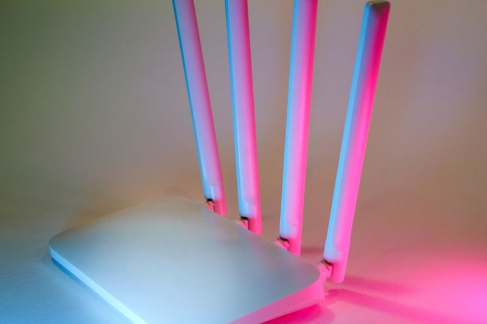
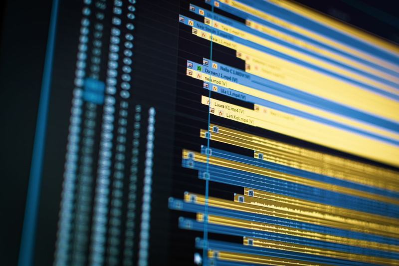
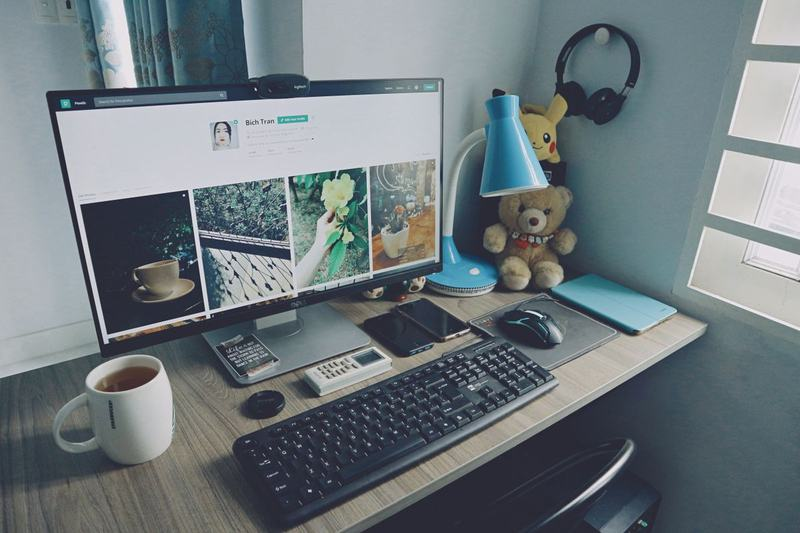

Internet beállítás
Segítünk az otthoni vezetékes vagy vezeték nélküli hálózat beállításában, hogy kényelmesen használhassa számítógépét, okostelefonját, tabletjét, TV-jét.
Lakossági ügyfeleknek
Gyors, megbízható segítség otthonra is.

Segítünk az otthoni vezetékes vagy vezeték nélküli hálózat beállításában, hogy kényelmesen használhassa számítógépét, okostelefonját, tabletjét, TV-jét.

Lassabbnak tűnik a számítógépe, mint korábban? Nem azt a teljesítményt nyújtja, amit megszokott? Gyorsan és véglegesen orvosoljuk a problémát!

Bővítené számítógépét? Tönkrement egy alkatrész? Egyszerűen csak szüksége van egy új monitorra vagy nyomtatóra? Megtaláljuk a legjobb megoldást!
Kérjen ajánlatot, vagy hívjon minket – szívesen áttekintjük az Ön informatikai rendszerét.